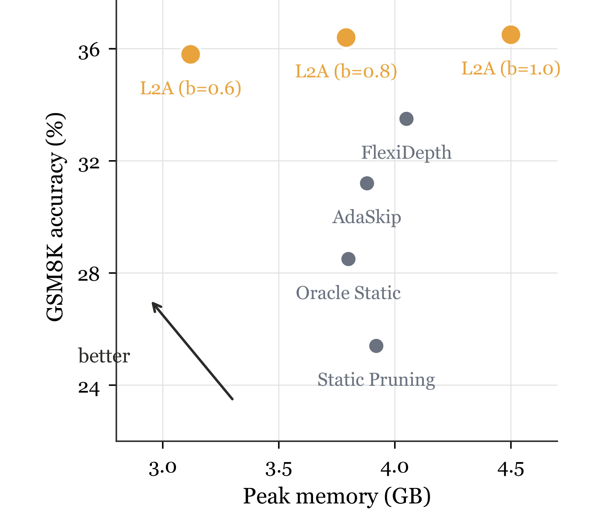
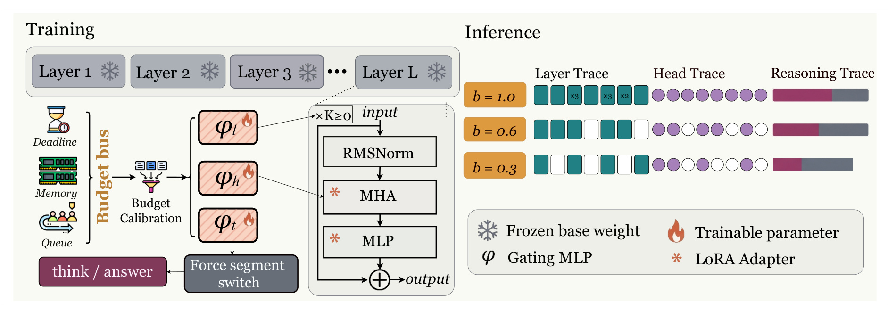
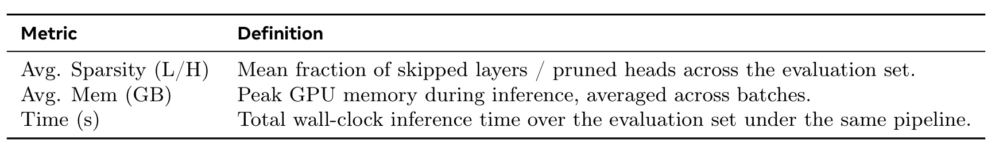
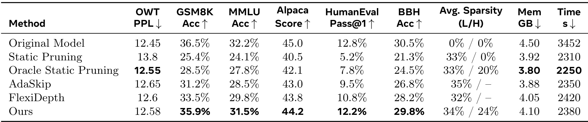
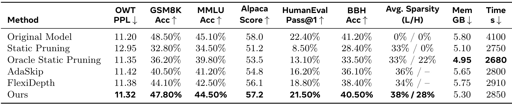
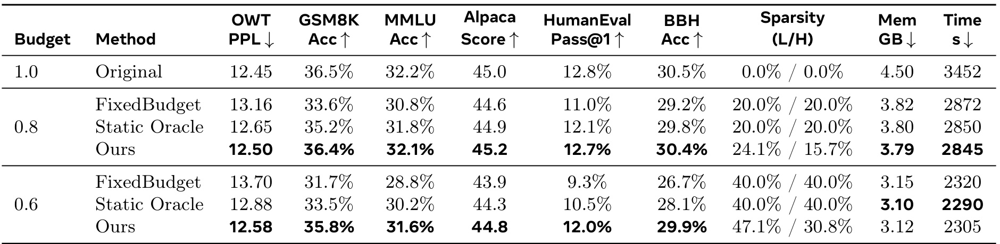
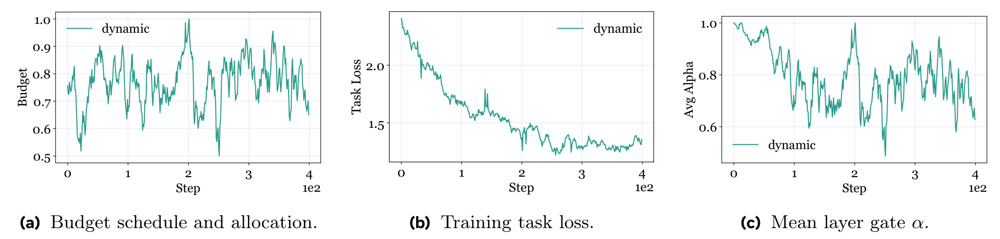
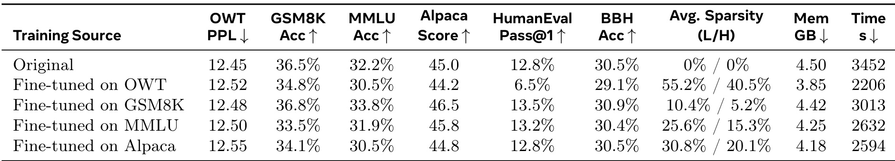
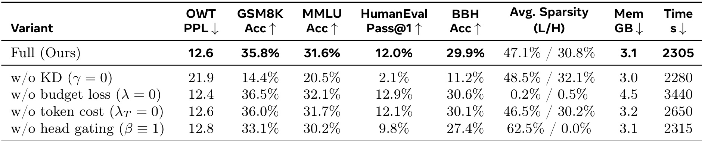
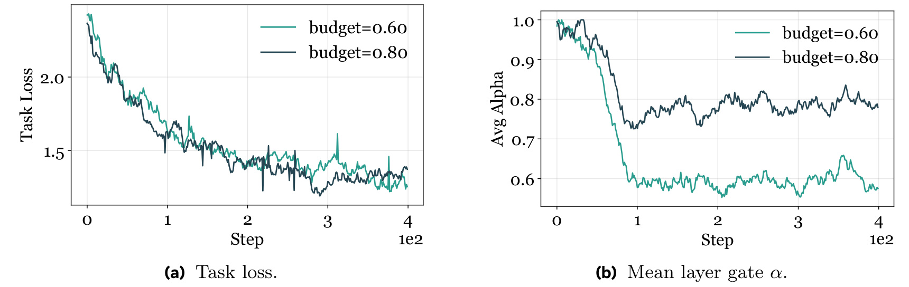

论文链接：arXiv:2606.27743
作者与机构：Yuhang Chen、Jinhao Duan、Ruichen Zhang 等；机构包括 University of North Carolina at Chapel Hill 与 Meta AI。论文日期为 2026 年 6 月 29 日。方法名为 Learning to Allocate，简称 L2A。代码/项目页状态：本轮从论文正文和 arXiv 页面未核验到独立代码仓库或项目页。
1. 背景和问题
大语言模型推理通常假设资源环境是静态的，因此每个请求都会执行同一张固定计算图；但真实云环境的可用实例、队列压力、内存余量和服务等级会持续波动，静态模型要么在资源收紧时崩溃或超时，要么在资源宽松或输入简单时浪费计算。
这篇论文想解决的不是传统意义上的“让模型更小”或“让平均延迟更低”，而是让同一个 LLM 在不同运行时预算下自动改变自己的计算足迹。作者把问题放在两个非常工程化的场景里：第一类是 spot instance 或抢占式资源，实例可能只剩很短时间，服务必须在截止前完成回答；第二类是 QoS 分层，同一个后端需要给不同用户等级、不同排队压力、不同内存水位分配不同质量和延迟组合。现有静态剪枝、蒸馏或固定深度模型只能给出一两个固定运行点，无法在请求到来时根据预算重新选择执行路径。已有动态推理方法虽然会看输入难度，例如早退或跳层启发式，但多数只把“这个样本难不难”作为判断依据，没有把“这次请求还能用多少资源”作为同等重要的条件。

Figure 1 是论文开篇最重要的动机图。横轴是峰值显存，纵轴是 GSM8K 准确率，右上方向代表更高准确率但更高资源占用，左上方向代表在更少显存下保持高准确率。静态剪枝、Oracle Static、AdaSkip 和 FlexiDepth 都落在较低准确率或较高内存的位置，而 L2A 在 b=1.0、0.8、0.6 三个预算点形成一条更靠左上的曲线。尤其是 b=0.6 时，L2A 已经把峰值内存降到接近 3GB 左右，仍明显高于同等资源附近的静态或启发式基线。这个图并不是完整实验结论，而是先说明作者的核心主张：如果稀疏决策同时知道输入和资源预算，它可以比固定剪枝策略更自然地移动到新的运行点。
论文把这个问题重新表述为“受约束的资源分配”。这里的资源不是单一 FLOPs，而被拆成三条轴：层跳过对应深度和显存压力，注意力头裁剪对应宽度和吞吐竞争，推理 token 缩短对应延迟约束。这个拆分很关键，因为真实服务里资源紧张的形态不一样：有时是 KV cache 或显存不够，有时是服务队列很长，有时是剩余时间不足。如果只有一个固定稀疏率，模型无法知道该少走层、少用头，还是尽快从思考段切换到答案段。L2A 的目标就是把这些运行时信号压缩成一个预算 b，让同一个模型在 b 变化时自动改变层、头和 reasoning 长度。
这个表述也让 L2A 和普通 early-exit 论文区分开来。普通 early-exit 更像是在问“当前输入已经够确定了吗”，而 L2A 额外问“当前服务条件还允许继续算吗”。如果一个输入很简单但预算宽，模型可以省计算但不必极端压缩；如果一个输入很难但预算紧，模型必须在质量和生存之间做受控折中。论文把这种折中交给端到端训练，而不是用固定阈值、手写 if-else 或多模型级联去拼接，所以它更像一个系统条件化的推理策略。
从论文摘要给出的数字看，作者并不追求在所有预算下超过 dense 模型，而是追求在预算收紧时优雅降级：少用计算、少掉准确率、仍能完成回答。这一点比单点压缩更贴近线上推理系统的真实需求。
这篇论文的一个边界也要先说明：它并没有证明所有部署栈都能从 head pruning 得到同等 wall-clock 收益，作者自己也写到头裁剪的实际加速依赖实现；更稳定的收益来自层跳过和推理长度控制。因此阅读时不能把“头稀疏率”直接等同于线上吞吐提升，而应把它看成预算策略的一部分。论文最有价值的地方在于把动态资源、输入难度、端到端训练目标和推理时硬决策放到同一个框架里，而不是单独提出一个剪枝启发式。
2. 方法
L2A 的整体形式可以概括为：冻结一个基础 LLM，在其中插入少量可训练门控网络和 LoRA 适配器；每次训练和推理都给门控网络一个归一化预算 b；门控网络根据当前隐藏状态和预算同时决定哪些层需要保留、哪些注意力头需要保留，以及何时从思考段转入答案段。作者强调这是 end-to-end，因为门控参数和 LoRA 参数一起由任务损失、蒸馏损失和资源损失训练，而不是先离线剪枝再补训练。

Figure 2 把这个机制画得比较直观。左侧的 deadline、queue、memory 等运行时信号先经过 Budget Calibration 变成预算总线；中间的 frozen base weight 表示主模型权重不直接更新，LoRA adapter 和 gating MLP 是可训练部分；右侧的 Layer Trace、Head Trace、Reasoning Trace 展示同一个模型在 b=1.0、0.6、0.3 下可以走出不同计算轨迹。注意图中不是给每个预算训练一个模型，而是一个 L2A 模型用同一组门控函数响应不同预算。这个设计解释了为什么论文会把它称为 resource-adaptive inference，而不只是 sparse inference。
2.1 预算信号和三类门控
论文先定义冻结基础模型为 fθ，LoRA 后的参数增量为 Δθ。对 token 序列 x，dense teacher 和 budgeted student 的下一个 token 分布分别记为 Pt 和 Ps。模型有 L 层、每层 H 个注意力头；层 l 的输入隐藏状态是 h_{l-1}。预算信号 b 位于 [0,1]，越大代表允许更多计算，并通过一个可学习嵌入 e(b) 注入所有门控网络。门控集合包括层门 α_l、头门 β_{l,h} 和推理段切换门 τ_t。这里最核心的机制不是门控本身，而是每个门都同时看隐藏状态和预算 b，因此策略能区分“样本很难但预算紧”和“样本很易但预算宽”这两类完全不同的情况。
层门的基础形式是论文中的式 (1)。这一步负责把隐藏状态中的输入难度线索和预算嵌入中的运行时约束放到同一个判别器里，因此它不是单纯根据层号决定是否跳过，也不是只根据 b 生成一套固定稀疏模板：
符号解释：α_l 是第 l 层是否保留的软门值；h_{l-1} 是进入该层前的隐藏状态；b 是运行时预算；e(b) 是预算嵌入；[h_{l-1};e(b)] 表示拼接；MLP_{\phi_L}^{(l)} 是第 l 层对应的轻量门控网络；σ 是 sigmoid，把输出压到 0 到 1 之间。训练时 α_l 是连续值，可以让梯度回传；推理时再用阈值把它硬化成跳过或保留。
2.2 层跳过、头裁剪和推理段切换
层跳过作用在残差更新上。论文把第 l 层的标准计算记为 F_l，则软门控后的更新可以写成下面这个残差形式。这个式子说明训练阶段不会立即把整层删除，而是先让门值连续地调节该层贡献，等策略稳定后再在推理时切成硬决策：
符号解释：h_l 是第 l 层输出；F_l 包含该层自注意力和 MLP 等标准子层计算；α_l 控制这一层对残差路径的贡献。训练阶段用软 α_l 保护可导性，推理阶段如果 α_l 低于阈值，就物理跳过 F_l，从而获得真实的深度减省。这个设计比固定删层更细，因为每个输入、每个预算都可以产生不同的 layer trace。
头裁剪用同样的预算条件思想，只是决策粒度从层变成每层里的 head。这样做的目的不是替代层跳过，而是在不进一步压低深度的情况下提供第二条稀疏轴。论文把多头注意力输出写成下面的 β 加权拼接：
符号解释：β_{l,h} 是第 l 层第 h 个注意力头的门值；Head_h 是该注意力头的输出；H 是每层头数；W_O 是多头拼接后的输出投影矩阵。β 低的头会被抑制。作者也谨慎指出，头裁剪的实际 wall-clock 收益取决于底层 kernel 和实现方式；在论文结果里，主要稳定收益更多来自层跳过和 reasoning 长度减少。
第三类门是 reasoning-to-answer transition gate。论文假设目标输出采用结构化格式，先有 think 段，再有 answer 段。τ_t 由隐藏状态 h_t 和预算 b 产生，在训练中保持软值并进入 token 长度成本；在推理中，如果 τ_t 超过阈值，系统会强制输出从思考段结束到答案段开始的边界 token，而不是直接停止生成。这让 L2A 的延迟控制不是粗暴截断整条回答，而是把“少想一点、仍要答完”变成可训练行为。 对需要多步推理的问题，预算宽时可以保留更长思考；预算紧时则更早切入答案段。
2.3 LoRA 适配和统一优化目标
直接让预训练模型在推理时随机少走层或少用头，很容易破坏内部表示。作者因此冻结原始权重 W_0，把低秩矩阵 ΔW=BA 注入 Query、Key、Value、Output 等线性层，使有效权重变为 W=W_0+ΔW。LoRA 的作用不是单独提升能力，而是让模型适应动态稀疏路径：当某些层或头被关闭时，剩余路径需要学会补偿表示扰动。这样做也控制了训练成本，因为大部分基础参数不更新。
统一目标函数是 L2A 方法章的核心。它把四类压力放进同一个优化式：要会预测下一个 token，要接近 dense teacher 的行为，要满足预算成本，还要在需要时缩短思考段。没有这个统一式，门控网络很容易退化成只追求稀疏或只保持 dense 质量的单目标策略：
符号解释：L(b) 是预算 b 条件下的总损失；L_{ce} 是 next-token cross-entropy，用来保持生成任务能力；L_{kd} 是从 dense teacher 到 sparse student 的 forward-KL 蒸馏，用来保持逻辑一致性；γ 是蒸馏权重；C(b) 是当前门控策略的期望计算成本；B(b) 是预算 b 对应的目标计算；λ 是预算约束的权重，可理解为拉格朗日乘子；R_{tok} 是 reasoning token 成本；λ_T 控制缩短思考段的强度。
期望计算成本被拆成层成本和头成本。论文没有直接用一个粗糙的“总稀疏率”约束所有结构，而是分别累计层门和头门带来的成本，再把它们汇合成 C(b)。这种写法让训练目标可以理解深度和宽度两条资源轴的不同贡献：
符号解释：S 是 mini-batch；L 是层数；H 是每层头数；C_l 和 C_h 分别是归一化后的层成本和头成本；R_L(b) 汇总层保留带来的成本；R_H(b) 汇总头保留带来的成本。论文把 C(b) 近似为 R_L(b)+R_H(b)，然后用 C(b)-B(b) 惩罚偏离预算的行为。若预算更紧，模型会被推动减少 α 和 β；若预算较宽，它可以保留更多计算来保护准确率。同一个目标里还要控制 reasoning 长度，作者把这部分成本写成：
符号解释：T 是最大生成步数；τ_t(x) 是样本 x 在第 t 步转入答案段的倾向；1-τ_t 越大，表示模型越倾向继续留在思考段。最小化 R_{tok} 会推动 τ_t 更早接近 1，从而缩短思考 token 数。但这个项不能单独工作，因为如果没有 L_{ce} 和 L_{kd}，模型可能只学会少想而丢掉答案质量。
2.4 推理时预算校准
训练阶段从分布 D 中采样预算 b，让门控网络见过不同运行点；推理阶段则需要把真实服务信号映射到同一个 [0,1] 范围。论文采用保守聚合：只要截止时间、内存或队列中的任一约束已经很紧，最终预算就跟随最紧的那一条资源轴收缩，而不是取平均后掩盖风险，这更接近线上服务的保守调度原则。
符号解释：b_{time}、b_{mem}、b_{queue} 分别来自截止时间、内存余量和队列压力；T_{sla} 是请求级 deadline；\widehat{T}{dense}(x) 是 dense 模型对当前输入的延迟估计；clip 把比值限制在 0 到 1；取 min 表示只要有一条资源轴很紧，最终预算就应该收紧。spot instance 场景下，论文还会用剩余抢占时间 T。这个校准模块使 L2A 可以接入实时系统状态，但它也引入一个实际风险：如果 dense 延迟估计或内存余量估计不准，门控策略会过于保守或过于激进。} 形成 b_{spot}，再并入 b_{time
3. 实验结果
实验设置覆盖两个开源 backbone：Llama-3-8B 和 Qwen-3-4B。数据与评估分为 ID 和 OOD：OpenWebText 与 GSM8K 用于语言建模和数学推理，MMLU、Alpaca-Eval 用于知识问答和指令跟随，HumanEval 与 BBH 作为未参与训练的代码生成和符号推理测试。基线包括原始 dense 模型、固定均匀剪枝、离线搜索得到的 Oracle Static Pruning、AdaSkip 和 FlexiDepth。作者还明确控制了 prompt、最大生成长度、停止条件、batching、decoding 和硬件，让比较尽量集中在动态分配策略本身。

Table 1 虽然很短，但它给出了后面所有表格的读法。Avg. Sparsity (L/H) 是评估集上的平均跳层比例和剪头比例；Avg. Mem 是平均峰值 GPU 显存；Time 是相同推理流水线下的总 wall-clock 时间。理解这三个指标很重要，因为论文不是只比较准确率，也不是只比较参数量。一个方法如果准确率高但显存、时间没有下降，就没有达到 resource-adaptive 目标；反过来，如果稀疏率很高但 GSM8K、HumanEval、BBH 大幅掉点，也说明它只是省了计算而没有保住推理能力。 另外，表中把层稀疏和头稀疏放在同一个 Avg. Sparsity 字段里，读者需要分开看：层跳过更容易转化为实际深度和内存收益，头裁剪则更依赖实现，所以后文解释效率时不能只取一个合并结论。

Table 2 是 Llama-3-8B 的代表性运行点。原始模型在 GSM8K 上是 36.5%，L2A 是 35.9%，差距为 0.6 个百分点；同时 L2A 达到 34% 层稀疏和 24% 头稀疏，峰值显存从 4.50GB 降到 4.10GB，时间从 3452s 降到 2380s。静态剪枝时间更低一些，但 GSM8K 掉到 25.4%，HumanEval 只有 5.2%，说明固定删结构对 reasoning 和 OOD 任务伤害很大。FlexiDepth 比静态剪枝好，但仍低于 L2A，尤其在 GSM8K、MMLU、HumanEval 和 BBH 上都没有贴近 dense baseline。这个表支撑论文摘要中的核心数字：在约 34% realized layer sparsity 下，L2A 能把 GSM8K 损失控制在 0.6 点内。

Table 3 说明方法不是只在一个 Llama backbone 上成立。Qwen-3-4B 原始模型 GSM8K 为 48.50%，L2A 为 47.80%；MMLU 从 45.10% 到 44.50%；HumanEval 从 22.40% 到 21.50%；BBH 从 41.20% 到 40.50%。与此同时，L2A 达到 38% 层稀疏和 28% 头稀疏，显存从 5.80GB 降到 5.30GB，时间从 4100s 降到 2850s。Static Pruning 与 Oracle Static 在 Qwen 上的损失同样明显，AdaSkip 和 FlexiDepth 处于中间。这个结果给出的信号是：预算条件门控与 LoRA 适配的组合在不同模型族上都能学到比较稳定的 compute-accuracy trade-off。

Table 4 把“动态预算条件策略”和“固定全局预算策略”拆开比较。在预算 0.8 下，L2A 的 GSM8K 是 36.4%，几乎等于原始模型 36.5%，并高于 FixedBudget 的 33.6% 和 Static Oracle 的 35.2%。在预算 0.6 下，FixedBudget 的 GSM8K 掉到 31.7%，Static Oracle 是 33.5%，L2A 仍有 35.8%。更重要的是，L2A 的实际稀疏率不是简单等于目标预算：在 0.6 条件下，它达到 47.1% 层稀疏和 30.8% 头稀疏，但仍能保留更好任务质量。这说明它不是把所有样本硬塞到一个稀疏配置，而是在相同平均成本下把计算分给更需要的输入。 这张表还说明“Oracle Static”并不是真正的运行时 oracle，它只是离线搜索一个固定配置；一旦输入难度和服务预算同时变化，固定配置仍然无法把额外计算留给最需要的样本。

Figure 3 是机制诊断图。左图是随 step 变化的预算调度和分配行为，中间图是训练 task loss，右图是平均层门 α。可以看到预算曲线波动时，平均 α 也随之改变；与此同时 task loss 仍然下降，没有出现“为了追预算而训练崩掉”的形态。这个图给 Table 4 的结果提供了过程证据：L2A 的预算响应不是表格后验调参，而是门控网络在训练过程中学会把外部 b 映射成不同保留程度。右图里的 α 并不总是单调贴住预算，因为输入难度也参与决策；这正是论文想要的自适应行为和稳定性。 如果平均 α 只是维持在常数，这个框架就退化成普通稀疏微调；如果 loss 随预算波动而发散，则说明门控破坏了任务学习。Figure 3 同时避开了这两种失败。

Table 5 做的是 super-matrix cross-domain evaluation。只在 OWT 上训练或校准的策略达到 55.2% 层稀疏和 40.5% 头稀疏，看起来很省，但 HumanEval Pass@1 从原始 12.8% 掉到 6.5%，说明它把代码生成这类硬任务过度剪掉了。只在 GSM8K 上训练的策略质量保持较好，HumanEval 甚至到 13.5%，但平均稀疏率只有 10.4%/5.2%，时间 3013s，接近保守 dense 策略。MMLU 和 Alpaca 单域训练介于两者之间。这个表说明输入难度感知不能从单一域直接泛化到所有域，混合来源训练更符合 L2A 的目标：简单任务可以省，复杂任务不能被省坏。 因此，这个表不是单纯证明某个训练源最好，而是在暴露预算策略的迁移风险：只见过简单域的门控会把困难域误判成可省，只见过困难域的门控又会在简单域过度保守。

Table 6 是最能解释方法为何有效的消融表。完整 L2A 在固定预算设置下 GSM8K 为 35.8%，平均稀疏率 47.1%/30.8%，时间 2305s；去掉 KD 后，GSM8K 暴跌到 14.4%，HumanEval 只有 2.1%，说明 dense teacher 的逻辑一致性约束不是装饰项，而是在高稀疏下保住推理能力的关键。去掉 budget loss 后，稀疏率几乎为 0，显存和时间回到 dense 附近，证明预算项确实驱动了计算减少。去掉 token cost 后质量基本保留，但时间升到 2650s，说明 reasoning length 控制主要影响延迟。只做 layer-only、关闭 head gating 时，为了匹配时延需要跳过 62.5% 层，准确率下降，说明把稀疏分散到深度和宽度比单轴压缩更稳。

Figure 4 补充了固定预算下的训练稳定性。左图显示 budget=0.60 和 budget=0.80 两条 task loss 曲线都下降，右图显示更紧的 0.60 预算对应更低平均 α，也就是更多层跳过；更宽的 0.80 预算保留更多层。这个诊断回应了动态门控常见的两个担心：一是门控会不会全部开或全部关，二是紧预算训练会不会导致 loss 不收敛。图中两条预算曲线都没有表现出明显 gate collapse，说明门控在不同固定预算下可以形成可区分的稳定运行点。
综合这些实验，L2A 的优势不是某一个表格里的单点最优，而是同一模型可以沿着预算 b 画出一条较好的 compute-accuracy frontier。它在 Llama-3-8B 与 Qwen-3-4B 上都接近 dense baseline；在 fixed-budget 对比里优于不能按输入分配的策略；在跨域表里说明单域稀疏策略容易偏；在消融里说明 KD、budget loss、token cost 和 head gating 都有明确作用。风险也同样来自这些实验边界：表格多数是离线 benchmark trace，不等同于真实生产流量；头裁剪的 wall-clock 收益依赖实现；预算校准需要可靠的延迟、显存和队列估计。
4. 总结
L2A 这篇论文的贡献可以概括为一句话：它把 LLM 推理效率从“固定压缩一个模型”推进到“同一个模型按输入和实时预算分配计算”。它的技术路径并不依赖一个很重的新 backbone，而是在冻结模型上加轻量预算条件门控和 LoRA 适配，再用任务损失、蒸馏损失、预算成本和 reasoning token 成本联合训练。这样得到的模型可以在推理时根据 b 选择层、头和思考长度，适合资源波动、QoS 分层和抢占式实例这类动态部署场景。
我认为这篇论文最值得跟进的点有三类。第一，预算校准模块需要真实服务验证：deadline、队列长度、KV cache headroom 和 dense latency estimator 的误差会直接影响 b，如果估计过紧，模型会不必要地牺牲质量；如果估计过宽，又可能无法满足 SLA。第二，head pruning 的收益需要和具体 inference kernel 绑定测试，不能只看 β 稀疏率；实际部署中可能需要结构化 head grouping 或 kernel 支持才能得到吞吐收益。第三，reasoning-to-answer transition 依赖稳定的结构化输出格式，对不适合 think/answer 模板的任务，需要重新设计终止信号或训练数据。
局限方面，论文主要报告离线 benchmark 和代表性 trace，没有展示真实多租户线上压测；预算 b 被压缩成单个标量，表达力可能不足以区分“显存紧但 deadline 宽”和“deadline 紧但显存宽”的细粒度策略；LoRA 与门控共同训练是否会在更大模型、更长上下文和多轮对话中保持稳定，还需要扩展实验；安全和一致性也需要额外评估，因为预算收紧时缩短 reasoning 可能改变解释长度、置信表达和拒答行为。尽管如此，L2A 提供了一个清晰的研究方向：把推理系统状态显式变成模型条件，让模型学会在服务约束下分配自己的计算，而不是在部署之后再用外部规则硬切。后续若要复现，我会优先检查预算采样分布 D、门控阈值硬化方式、LoRA 插入位置和线上延迟估计器，因为这些细节最可能决定离线 frontier 能否转成真实服务收益。